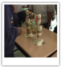

My Classroom
Room 233 @ SciTech Academy

Innovation & Design Thinking
Students should get as much time to tackle open ended problems. There are no right answers. Just design, build, test, repeat

Blended Learning
Technology should be used to enhance student learning and leverage the strengths of a teacher. It shouldn't become the only learning nor detract from collaboration & social skills.
Using Data Daily
Students and teachers should know if their 60 minutes were well spent. If not, they can use their data to readjust and improve each day.
Engagement and Excitement
Elusive? No. An Art form? Yes. Students should drive their own learning. They should have a daily purpose for being in class. Most of my energy goes towards trying to accomplish this goal